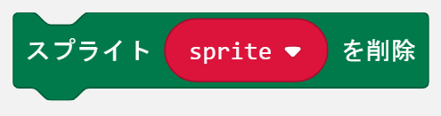
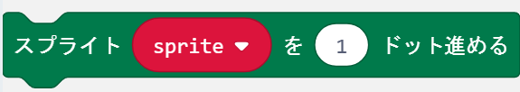
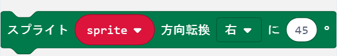
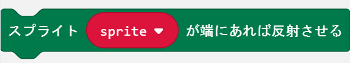
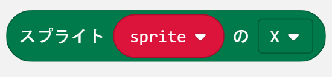
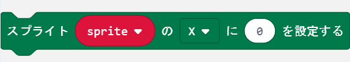
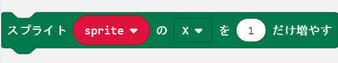
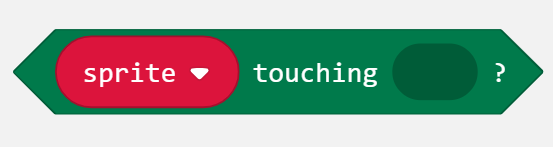
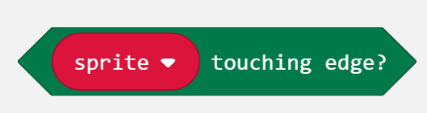

プログラムダウンロード
| 章 | ゲーム名 | プログラム |
|---|---|---|
| 3章 | ミニアクションゲーム | 基本編 / 応用編 |
| 4章 | キャッチゲーム | 基本編 / 応用編 |
| 5章 | 逃走ゲーム | 基本編 / 応用編 |
| 6章 | リズムゲーム | 基本編 / 応用編 |
| 7章 | シューティングゲーム | 基本編 / 応用編 |
| 8章 | 無線でパワーアップ | 基本編 |
| 9章 | ゲーム機を作ろう | 基本編 / 応用編 |
ブロックリファレンス
| 機能 | 新しいスプライトを作成します。 |
|---|---|
| パラメータ |
0と4は画面端を表し、2が中心です。 |
| 注意 |
|
|  | |
| 機能 | スプライトを削除します。 |
|---|---|
| パラメータ | 削除するスプライトの名前 |
| 注意 | 削除したスプライトは画面から消えて、他のスプライトと衝突しなくなります。 |
|  | |
| 機能 | スプライトを現在向いている方向に移動します。 |
|---|---|
| パラメータ | 移動する距離 |
| 注意 | 画面端を超えて移動することはありません。 |
|  | |
| 機能 | スプライトを回転させて、向きを変えます |
|---|---|
| パラメータ |
|
| 注意 | 45°ごとではない数字を入れると、直前の45°ごとの数字に変換されます。
|
|  | |
| 機能 | スプライトが画面端にあり、かつ、画面端の方向を向いていれば、反射させます。 |
|---|---|
| パラメータ | 特になし。 |
| 注意 | 反射するとスプライトの向きが180°変わります。 |
|  | |
| 機能 | スプライトの様々な情報を取得します。 |
|---|---|
| パラメータ |
|
| 注意 | 特になし。 |
|  | |
| 機能 | スプライトの様々な情報を設定します。 |
|---|---|
| パラメータ |
|
| 注意 | 範囲外の値を設定した場合、値が自動的に切り詰められます。 |
|  | |
| 機能 | スプライトの様々な情報を変更します。 |
|---|---|
| パラメータ |
|
| 注意 | 範囲外の値を設定した場合、値が自動的に切り詰められます。 |
|  | |
| 機能 | スプライトが他のスプライトと同じ位置にあるかどうか調べます。 |
|---|---|
| パラメータ | 同じ位置にあるか調べる相手のスプライト |
| 戻り値 |
|
| 注意 | 同じ位置にあるというのは、スプライトが存在していて、X・Y座標がいずれも等しいことです。 |
|  | |
| 機能 | スプライトが画面端にあるかどうかを調べます。 |
|---|---|
| パラメータ | 特になし。 |
| 戻り値 |
|
| 注意 | 画面端というのは、X座標またはY座標が0か4のときです。 |